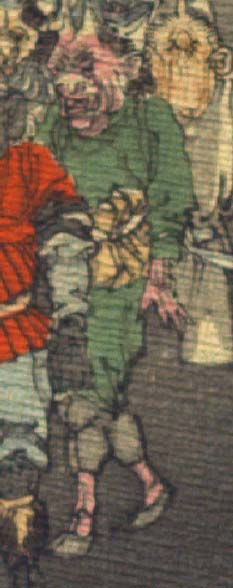

赤い肌の鬼。額に2本角を生やし、後頭部から毛を生やしている。目は小さく、耳は大きく、鼻は豚のようである。異国風の緑色の衣服を身に着けている。手指の爪は鋭い。
著作者：J.Dautremer／出典：親書誌：U426_nichibunken_0123：Le vieillard et les démons／日付：2006／資源識別子：U426_nichibunken_0123_0001_0002
Copyright (c)2010- International Research Center for Japanese Studies, Kyoto, Japan. All rights reserved.